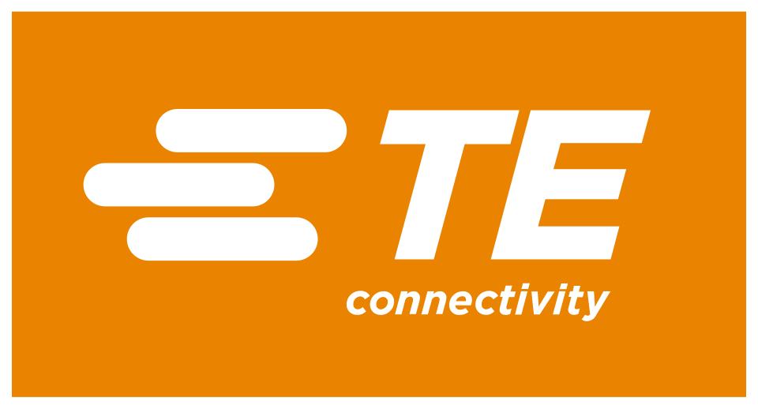

TE 커넥티비티 TE Connectivity
TE 커넥티비티(TE Connectivity)는 전기·전자 부품을 설계하고 제조하는 미국-아일랜드계 기술 기업이다. 가혹한 환경에 쓰이는 커넥터와 센서를 중심으로 여러 산업에 부품을 공급한다.
최종 업데이트

TE 커넥티비티는 어떤 브랜드인가
TE 커넥티비티는 자동차, 항공우주, 방위, 의료, 에너지 산업 등에 전기·전자 부품을 공급한다. 사업은 커뮤니케이션, 트랜스포테이션, 인더스트리얼의 세 부문으로 운영한다.
커뮤니케이션 부문은 세탁기, 냉장고, 에어컨, 식기세척기 등 가전제품용 전자 부품을 다룬다. 트랜스포테이션과 인더스트리얼 부문은 차량, 센서, 공장 자동화, 철도, 건물, 의료, 항공우주 및 방위 분야를 담당한다.
본사는 스위스 샤프하우젠에 있으며, 8,000명 이상의 엔지니어를 포함한 전 세계 직원 89,000명이 약 140개국의 고객에게 서비스를 제공한다.
TE 커넥티비티는 어떻게 시작되고 성장했나
현재 회사는 2007년 타이코의 분할을 통해 독립 상장 회사인 타이코 일렉트로닉스로 출범했다. 전신인 Aircraft and Marine Products는 1941년 항공기와 선박용 무납땜 전기 연결 장치를 만들기 위해 설립했다.
회사는 1956년 재법인화하며 이름을 AMP Incorporated로 변경했고, 1999년 타이코 인터내셔널이 이를 인수했다. 타이코는 2007년 타이코 일렉트로닉스를 포함한 세 개의 독립 회사로 분할했다.
타이코 일렉트로닉스는 2011년 커넥티비티 및 센서 부품 제조업체라는 위치를 반영해 TE 커넥티비티로 사명을 변경했다.
TE 커넥티비티의 브랜드 아이덴티티는 무엇인가
가혹한 환경용 커넥터와 센서를 중심으로 자동차부터 의료, 항공우주, 방위, 에너지까지 폭넓은 산업을 연결한다.
TE 커넥티비티의 대표 제품과 서비스는 무엇인가
제품 포트폴리오는 가혹한 환경을 견디도록 제작한 커넥터와 센서에 집중한다. 자동차 분야에서는 차량 본체와 섀시, 운전자 정보, 인포테인먼트, 모터와 파워트레인, 안전·보안, 배터리와 충전 기술에 쓰이는 제품을 공급한다.
인더스트리얼 부문은 공장 자동화, 로봇 공학, 인간-기계 인터페이스, 산업 통신과 배전, 건물 설비, 철도, 태양광 및 조명 분야의 제품을 공급한다. 의료용 영상·진단·치료·수술 애플리케이션과 항공우주·방위용 전자 상호 연결 장치, 해저 및 선상용 케이블과 전자기기도 제공한다.
TE 커넥티비티는 지금 어떤 상태인가
TE 커넥티비티는 전 세계 직원 89,000명을 보유하며, 이 가운데 엔지니어가 8,000명 이상이다. 약 140개국의 고객을 대상으로 사업을 운영한다.
2025년에는 가공 및 지하 전기·가스 배전 제품 제조업체 Richards Manufacturing을 약 23억 달러에 인수할 의사를 발표했다.
TE 커넥티비티 로고는 어떻게 변해왔나
자주 묻는 질문
TE 커넥티비티는 어느 나라 브랜드인가요?
TE 커넥티비티는 스위스의 기술·전자 브랜드입니다.
TE 커넥티비티는 언제 설립되었나요?
TE 커넥티비티는 2007년 설립되었습니다.
TE 커넥티비티의 브랜드 아이덴티티는 무엇인가요?
가혹한 환경용 커넥터와 센서를 중심으로 자동차부터 의료, 항공우주, 방위, 에너지까지 폭넓은 산업을 연결한다.
TE 커넥티비티의 대표 제품은 무엇인가요?
제품 포트폴리오는 가혹한 환경을 견디도록 제작한 커넥터와 센서에 집중한다.
TE 커넥티비티는 현재 어떤 상태인가요?
TE 커넥티비티는 전 세계 직원 89,000명을 보유하며, 이 가운데 엔지니어가 8,000명 이상이다.
TE 커넥티비티의 본사는 어디에 있나요?
TE 커넥티비티의 본사는 샤프하우젠에 있습니다(위키데이터 기준).
TE 커넥티비티의 공식 웹사이트는 어디인가요?
TE 커넥티비티의 공식 웹사이트는 http://www.te.com/ 입니다.
출처와 검증
TE 커넥티비티 관련 참고: 공식 웹사이트 · 위키데이터 Q663452 · 한국어 위키백과 · 영어 위키백과. 브랜드명은 한글과 원어를 함께 표기하되 데이터에 없는 표기는 만들지 않습니다. 기원 국가·설립연도는 검수된 정의문에서 확인된 값을 우선하고, 없을 때만 공식 웹사이트 URL이 일치하는 위키데이터 개체의 값을 씁니다. 위키데이터 값은 2026-09-12 기준입니다.